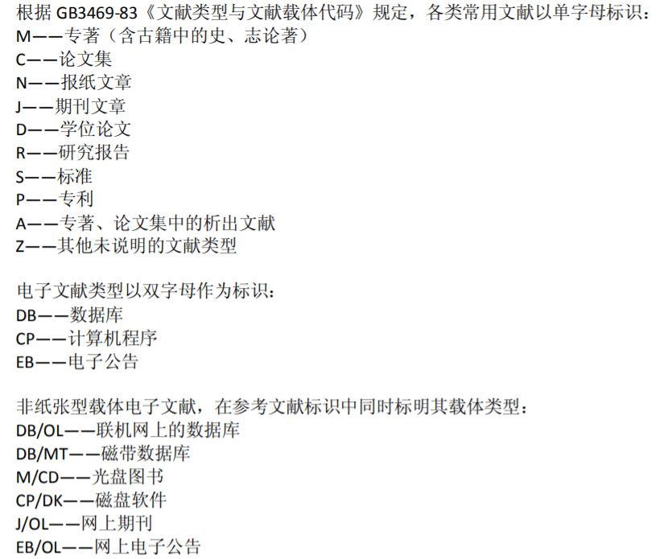

研究的研究（二）：论文，文献
阅读文献的目的，一是了解state of art（最新技术）；二是为了获取解决问题的思路和方法。做研究最重要的是idea+解决方案，要产出自己新颖的idea需要不断阅读文献，了解state of art；解决方案有理论+实验，文献中他人的理论推理和实验设计思路也都值得学习。当idea明确问题已知时，更需要带着问题，在相关资料中寻找答案。
Brief Intro. to 文献
文献（Literature），意思为有历史意义或研究价值的图书、期刊、典章。一篇论文的参考文献必须是权威资料，比如学术论文、专刊、政府文件等；百度百科、博客之类的都是不能直接当参考文献的。个人理解是，未经多名同行专家评审的内容，都是不够权威的，但是用心找找出处，总能找到权威，比如“文献”一词出自《论语·八佾》。
常见的文献分类如下（国标 GB3469-83文献类型与文献载体代码）：

期刊和会议
从论文阅读和发表的角度来看，经常听到的中文词汇大致是期刊论文和会议论文，而相应的英文词汇则较为丰富：
- Transactions, Journal, Magzine, Letter
- Proceedings, Conference, Symposium, Workshop, Meetings, Events
- Oral, Poster
期刊
可参考链接：ACM About Publications、StackExchange - transactions and journal、quora - ieee、各类期刊的区别
- Journal：期刊，学报。Transactions和Journal一样，但汇总的是会议上的论文。
- Magzine：杂志
- Letter：短文
著名期刊: CNS
- Cell：是由(Elsevier出版公司旗下的Cell Press发行。主要发表实验生物学领域中的最新研究发现。
- Nature：英国的，首刊于1869年，涵盖生命科学、自然科学、临床医学、物理化学等领域。维基百科: Nature
- Science：美国的，首刊于1880年，刊载重大的原创性科学研究和科研综述，也发表与科学相关的新闻、关于科技政策及科学家感兴趣的事务的观点。维基百科: Science
著名的索引
关于索引（Index）：发论文要投稿，SCI并不是接收论文的地方，而是论文投给被SCI收录的期刊或会议，就能通过SCI数据库检索到。其他类似的索引也一样，著名的索引以下：
- SCI（Science Citation Index）：包括有自然科学、生物、医学、农业、技术和行为科学等，主要侧重基础科学。
- SSCI（Social Science Citation Index）：内容覆盖包括人类学、法律、经济、历史、地理、心理学等55个领域。
- CPCI（Conference Proceedings Citation Index）：涵盖自然科学、技术科学以及历史与哲学等。
- EI（The Engineering Index）：涵盖动力、电工、电子、自动控制、矿冶、金属工艺、机械制造、管理、土建、水利、教育工程等。
- CSSCI（Chinese Social Sciences Citation Index）：检索中文社会科学领域的论文收录和文献被引用情况。
如何查看被某index收录的期刊？一般在官网都能找到：
- SCI 链接 ：可搜索期刊名称
影响因子和论文的分区
- 影响因子（Impact Factor，IF）：指某一期刊的文章在特定年份或时期被引用的频率，是衡量学术期刊影响力的一个重要指标。由JCR每年定期发布。
- 论文的分区：有中科院分区和JCR分区（又叫汤森路透分区）。
- 将所有SCI期刊按影响因子排序，都分为4个区。
会议
会议，顾名思义，就是那个开会的会议。学术会议是同领域人聚集在一起，论文作者有机会做Presentation，主要目的是沟通、交流（social和show off）。向会议投稿，oral是有机会做口头的presentation；poster是作者贴海报在外面，有兴趣可以面谈
- Conference：所有会议都能叫Conference，正式的会议，规模较大
- Symposium：研讨会，一般专指正式的学术会议，但规模较conference小一些,也有一个讨论主题。在某些学术会议的大conference下，会有各个具体研究领域的小symposium。
- Workshop：由更少的人进行讨论的小会议，讨论的程度更高一些。有一些学术会议conference，会根据需要召开一些小的workshop进行某些方向的小讨论。
- Meetings：面谈，交换意见的小会
会议一般是一年一次，Proceedings是会议之后的收录集
CS中的期刊和会议
CS对期刊和会议的评级一般采用的是CCF推荐的表格，各个小方向期刊/会议的名录和等级很清晰，分为A/B/C。链接在这里
同时，CS与其他学科不同，CS领域的会议>期刊，而其他领域是期刊>会议。
论文的发表
论文在完成之后，发表过程有如下的关键环节/人物/组织：
- 投稿：作者
- 接收方：期刊/会议（及其组织）
- 评审：审稿人
- 发表与传播：出版社、数据库
投稿：作者
论文的作者一般是高校或研究院的学生、老师、研究员
接收方：期刊/会议
期刊/会议、审稿、发表都需要组织和组织者。会议会有一个Committee，有各种Chair。计算机相关的组织如下：
- ACM（Association for Computing Machinery）：美国计算机协会
- ACM旗下有很多个CS小方向的 SIGs（Special Interest Groups）。SIGs会组织很多会议，比如SIGGRAPH（SIGGRAPH本身是组织名，也是会议名）、CHI（SIGCHI是组织名，CHI是SIGCHI组织的一个会议）
- ACM国际大学生程序设计竞赛，即ICPC（International Collegiate Programming Contest）就是由ACM组织举办的
- IEEE（Institute of Electrical and Electronics Engineers）：电气与电子工程师协会
这些组织都有自己对应的数据库，比如 ACM Digital Library 和 IEEE Xplore Digital Library。一般高校都购买了这些资料，打开校园网可以免费浏览。
评审：审稿人
审稿意见通常为：
- Accepted（接收）
- Minor Revision（大修）
- Major Revision（小修）
- Reject（拒稿）
发表与传播：出版社、数据库
CS常见的出版社（参考CCF的推荐表）：
- ACM
- IEEE
- Elsevier
- Springer
- Taylor & Francis
- Wiley
- USENIX
搜索、收集、阅读论文的常用数据库：
- ACM Digital Library
- IEEE Xplore Digital Library
- dblp：是专注于CS学科的元数据库（仅收录标题、作者），整理得非常好，可以按会议、作者等查看
- Google Scholar
- arxiv
- springer
文献的阅读
阅读文献的目的：
- 了解state of art（最新技术）
- 获取解决问题的思路和方法
那阅读和收集文献就应该有两种不同的方法：
- 目的不明确：学习或者休闲娱乐为主，可以是泛读、也可以是精读
- 可以按会议/期刊，从最新开始阅读，阅读的同时也要思考，学习休闲为主。
- 目的明确：学习、精读，带着问题找答案
- 使用搜索引擎检索关键词
结语
自己新颖的idea从阅读的文献中来，解决方案也要从不断的阅读中学习。最终产出的论文只是研究成果的展现方式，而非研究成果本身。简而言之，广泛地阅读是不会错的。
 wechat
wechat alipay
alipay